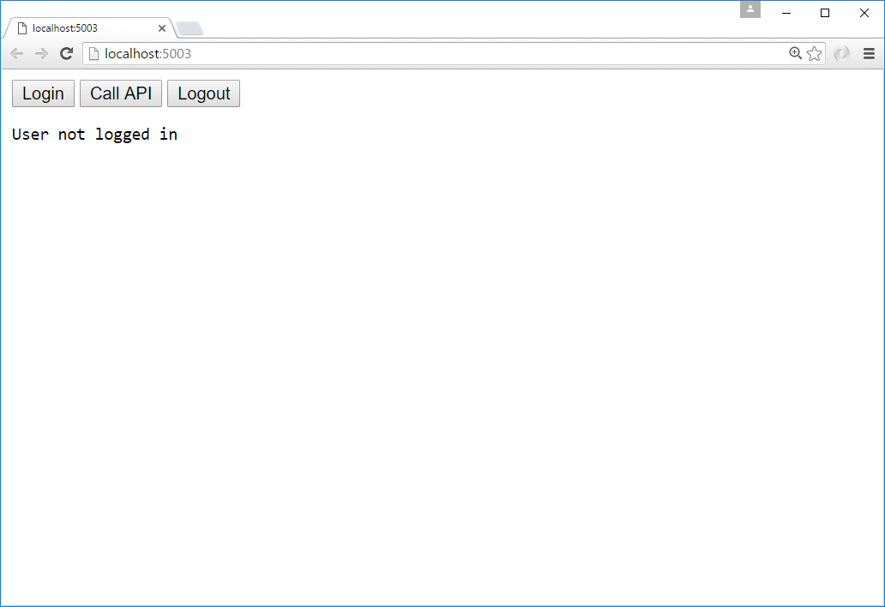
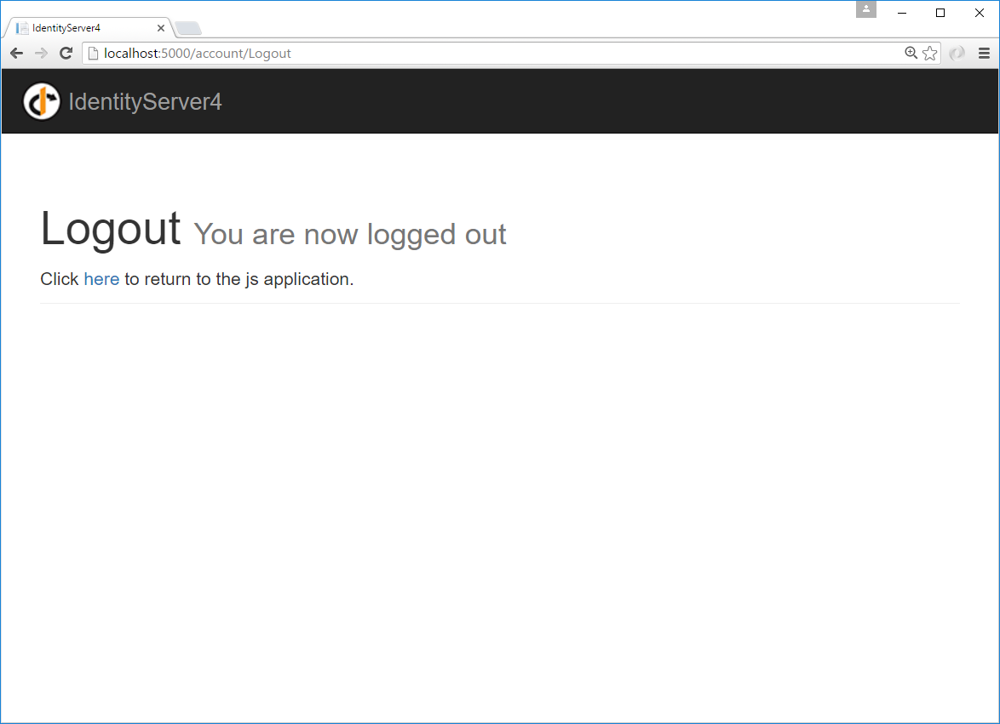

Adding a JavaScript client¶
This quickstart will show how to build a JavaScript client application. The user will login to IdentityServer, invoke the web API with an access token issued by IdentityServer, and logout of IdentityServer.
New Project for the JavaScript client¶
Create a new project for the JavaScript application. It can simply be an empty web project, or an empty ASP.NET Core application. This quickstart will use an empty ASP.NET Core application.
Create a new ASP.NET Core web application:
Choose the “Empty” template:
Click the “OK” button to create the project.
Modify hosting¶
Modify the hosting (as described here) to run on port 5003.
Add the static file middleware¶
Given that this project is designed to mainly run client-side, we need ASP.NET Core to serve up the static HTML and JavaScript files that will make up our application. The static file middleware is designed to do this.
Register the static file middleware in Startup.cs in the Configure method:
public void Configure(IApplicationBuilder app)
{
app.UseDefaultFiles();
app.UseStaticFiles();
}
This middleware will now serve up static files from the application’s ~/wwwroot folder. This is where we will put our HTML and JavaScript files.
Reference oidc-client¶
In the MVC project, we used a library to handle the OpenID Connect protocol. In this project we need a similar library, except one that works in JavaScript and is designed to run in the browser. The oidc-client library is one such library. It is available via NPM, Bower, as well as a direct download from github.
NPM
If you want to use NPM to download oidc-client, then follow these steps:
Add a new NPM package file to your project and name it package.json:
In package.json add a dependency to oidc-client:
"dependencies": {
"oidc-client": "1.4.1"
}
Once you have saved this file, Visual Studio should automatically restore these packages into a folder called node_modules:
Locate the file called oidc-client.js in the ~/node_modules/oidc-client/dist folder and copy it into your application’s ~/wwwroot folder. There are more sophisticated ways of copying your NPM packages into ~/wwwroot, but those techniques are beyond the scope of this quickstart.
Add your HTML and JavaScript files¶
Next is to add your HTML and JavaScript files to ~/wwwroot. We will have two HTML files and one application-specific JavaScript file (in addition to the oidc-client.js library). In ~/wwwroot, add a HTML file named index.html and callback.html, and add a JavaScript file called app.js.
index.html
This will be the main page in our application.
It will simply contain the HTML for the buttons for the user to login, logout, and call the web API.
It will also contain the <script> tags to include our two JavaScript files.
It will also contain a <pre> used for showing messages to the user.
It should look like this:
<!DOCTYPE html>
<html>
<head>
<meta charset="utf-8" />
<title></title>
</head>
<body>
<button id="login">Login</button>
<button id="api">Call API</button>
<button id="logout">Logout</button>
<pre id="results"></pre>
<script src="oidc-client.js"></script>
<script src="app.js"></script>
</body>
</html>
app.js
This will contain the main code for our application.
The first thing is to add a helper function to log messages to the <pre>:
function log() {
document.getElementById('results').innerText = '';
Array.prototype.forEach.call(arguments, function (msg) {
if (msg instanceof Error) {
msg = "Error: " + msg.message;
}
else if (typeof msg !== 'string') {
msg = JSON.stringify(msg, null, 2);
}
document.getElementById('results').innerHTML += msg + '\r\n';
});
}
Next, add code to register “click” event handlers to the three buttons:
document.getElementById("login").addEventListener("click", login, false);
document.getElementById("api").addEventListener("click", api, false);
document.getElementById("logout").addEventListener("click", logout, false);
Next, we can use the UserManager class in the oidc-client library to manage the OpenID Connect protocol.
It requires similar configuration that was necessary in the MVC Client (albeit with different values).
Add this code to configure and instantiate the UserManager:
var config = {
authority: "http://localhost:5000",
client_id: "js",
redirect_uri: "http://localhost:5003/callback.html",
response_type: "id_token token",
scope:"openid profile api1",
post_logout_redirect_uri : "http://localhost:5003/index.html",
};
var mgr = new Oidc.UserManager(config);
Next, the UserManager provides a getUser API to know if the user is logged into the JavaScript application.
It uses a JavaScript Promise to return the results asynchronously.
The returned User object has a profile property which contains the claims for the user.
Add this code to detect if the user is logged into the JavaScript application:
mgr.getUser().then(function (user) {
if (user) {
log("User logged in", user.profile);
}
else {
log("User not logged in");
}
});
Next, we want to implement the login, api, and logout functions.
The UserManager provides a signinRedirect to log the user in, and a signoutRedirect to log the user out.
The User object that we obtained in the above code also has an access_token property which can be used to authenticate with a web API.
The access_token will be passed to the web API via the Authorization header with the Bearer scheme.
Add this code to implement those three functions in our application:
function login() {
mgr.signinRedirect();
}
function api() {
mgr.getUser().then(function (user) {
var url = "http://localhost:5001/identity";
var xhr = new XMLHttpRequest();
xhr.open("GET", url);
xhr.onload = function () {
log(xhr.status, JSON.parse(xhr.responseText));
}
xhr.setRequestHeader("Authorization", "Bearer " + user.access_token);
xhr.send();
});
}
function logout() {
mgr.signoutRedirect();
}
See: Protecting an API using Client Credentials <http://docs.identityserver.io/en/release/quickstarts/1_client_credentials.html> for information on how to create the api used in the code above.
callback.html
This HTML file is the designated redirect_uri page once the user has logged into IdentityServer.
It will complete the OpenID Connect protocol sign-in handshake with IdentityServer.
The code for this is all provided by the UserManager class we used earlier.
Once the sign-in is complete, we can then redirect the user back to the main index.html page.
Add this code to complete the signin process:
<!DOCTYPE html>
<html>
<head>
<meta charset="utf-8" />
<title></title>
</head>
<body>
<script src="oidc-client.js"></script>
<script>
new Oidc.UserManager().signinRedirectCallback().then(function () {
window.location = "index.html";
}).catch(function (e) {
console.error(e);
});
</script>
</body>
</html>
Add a client registration to IdentityServer for the JavaScript client¶
Now that the client application is ready to go, we need to define a configuration entry in IdentityServer for this new JavaScript client. In the IdentityServer project locate the client configuration (in Config.cs). Add a new Client to the list for our new JavaScript application. It should have the configuration listed below:
// JavaScript Client
new Client
{
ClientId = "js",
ClientName = "JavaScript Client",
AllowedGrantTypes = GrantTypes.Implicit,
AllowAccessTokensViaBrowser = true,
RedirectUris = { "http://localhost:5003/callback.html" },
PostLogoutRedirectUris = { "http://localhost:5003/index.html" },
AllowedCorsOrigins = { "http://localhost:5003" },
AllowedScopes =
{
IdentityServerConstants.StandardScopes.OpenId,
IdentityServerConstants.StandardScopes.Profile,
"api1"
}
}
Allowing Ajax calls to the Web API with CORS¶
One last bit of configuration that is necessary is to configure CORS in the web API project. This will allow Ajax calls to be made from http://localhost:5003 to http://localhost:5001.
Configure CORS
Add the CORS services to the dependency injection system in ConfigureServices in Startup.cs:
public void ConfigureServices(IServiceCollection services)
{
services.AddMvcCore()
.AddAuthorization()
.AddJsonFormatters();
services.AddAuthentication("Bearer")
.AddIdentityServerAuthentication(options =>
{
options.Authority = "http://localhost:5000";
options.RequireHttpsMetadata = false;
options.ApiName = "api1";
});
services.AddCors(options =>
{
// this defines a CORS policy called "default"
options.AddPolicy("default", policy =>
{
policy.WithOrigins("http://localhost:5003")
.AllowAnyHeader()
.AllowAnyMethod();
});
});
}
Add the CORS middleware to the pipeline in Configure:
public void Configure(IApplicationBuilder app)
{
app.UseCors("default");
app.UseAuthentication();
app.UseMvc();
}
Run the JavaScript application¶
Now you should be able to run the JavaScript client application:
Click the “Login” button to sign the user in. Once the user is returned back to the JavaScript application, you should see their profile information:

And click the “API” button to invoke the web API:

And finally click “Logout” to sign the user out.
You now have the start of a JavaScript client application that uses IdentityServer for sign-in, sign-out, and authenticating calls to web APIs.